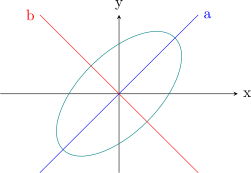

9.3 Conic Sections
The following are the standard conic sections:
- 1.
- Ellipse \(\dfrac {x^2}{a^2}+\dfrac {y^2}{b^2}=1\)
- 2.
- Hyperbola \(\dfrac {x^2}{a^2}-\dfrac {y^2}{b^2}=1\).
- 3.
- Parabola \(y^2=4ax\)
- 4.
- Ellipsoid \(\dfrac {x^2}{a^2}+\dfrac {y^2}{b^2}+\dfrac {z^2}{c^2}=1\)
- 5.
- Hyperoboloid of one sheet \(\dfrac {x^2}{a^2}+\dfrac {y^2}{b^2}-\dfrac {z^2}{c^2}=1\)
- 6.
- Elliptic paraboloid \(\dfrac {x^2}{a^2}+\dfrac {y^2}{b^2}=z\)
- 7.
- Hyperbolic paraboloid \(\dfrac {x^2}{a^2}-\dfrac {y^2}{b^2}=z\)
- 8.
- Hyperboloid of two sheets \(\dfrac {x^2}{a^2}-\dfrac {y^2}{b^2}-\dfrac {z^2}{c^2}=1\)
- 9.
- Elliptic cone \(\dfrac {x^2}{a^2}+\dfrac {y^2}{b^2}=\dfrac {z^2}{c^2}\)
Solution. \(A= \begin {pmatrix} 5&-3\\-3&5\\ \end {pmatrix} \hspace {0.4cm}\implies \lambda =2,8\)
\(D(x)=2a^2+8b^2=8\hspace {0.4cm}\implies \dfrac {a^2}{4}+\dfrac {b^2}{1}=1\).
Ellipse with principal axes = 2, minor axes = 1.
\(\lambda =2\), \(V= \begin {pmatrix} 1\\1 \end {pmatrix} \) , line of rotation \(y=x\)

Solution. \( \begin {pmatrix} 7&-1&-2\\-1&7&2\\-2&2&10\\ \end {pmatrix} \hspace {0.4cm} \implies \lambda =6,6,12\) \begin {align*} D(a,b,c) &=6a^2+6b^2+12c^2=24\\ &\implies \frac {a^2}{4}+\frac {b^2}{4}+\frac {c^2}{\sqrt {2}}=1\\\\ &\implies \frac {a^2}{2^2}+\frac {b^2}{2^2}+\frac {c^2}{\sqrt {2}}=1 \end {align*}
\(\implies \) Ellipsoid.
Questions on this section
Stuck on something here? Ask below and it stays attached to this topic.